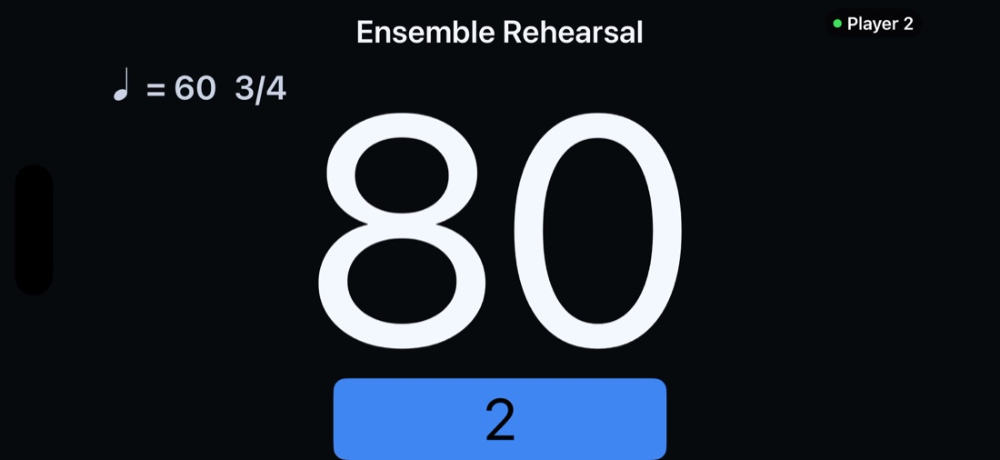

Space Timer Host
Set time signatures and tempo changes on your Mac, choose a starting measure, and control playback. Use Stopwatch mode to track time and Display Text to show a short message as you type on connected performer screens.
Music & performance / In preparation
A shared view of measures, beats, and time for ensemble rehearsals and performances.
Two free companion apps, currently in preparation.
Space Timer Host · Mac
Space Timer · iPhone & iPad


Set time signatures and tempo changes on your Mac, choose a starting measure, and control playback. Use Stopwatch mode to track time and Display Text to show a short message as you type on connected performer screens.
Connect your iPhone or iPad to the Mac host to see the count-in, current measure and beat, and display text. In Stopwatch mode, the performer screen shows the running time.
Open both apps on the same Wi-Fi network, allow Local Network access, select the Mac, and enter its four-digit join code.
Read the setup and troubleshooting guide →Operated by Hyunsuk Jun. Support is provided in English.